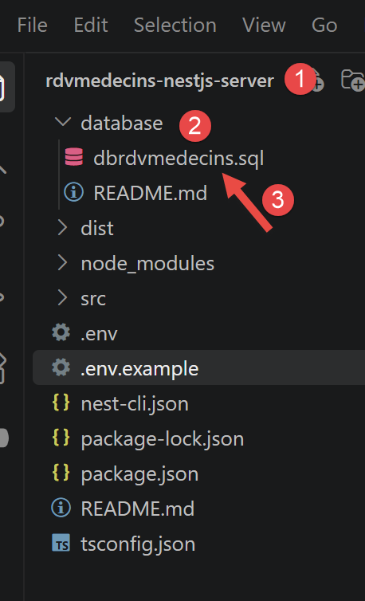
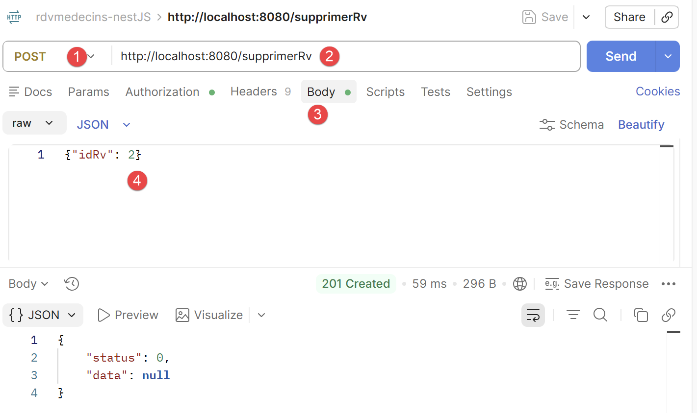
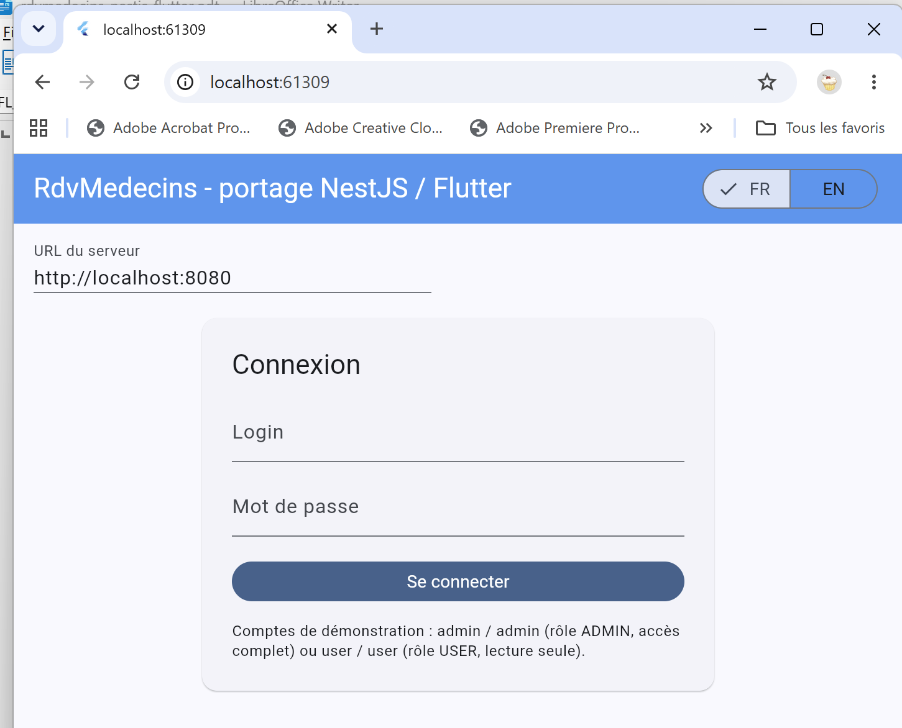

3. Chapitre 2 - Installation du serveur [NestJS]
Le client [Flutter] de ce document a besoin d’un serveur à interroger : le serveur [NestJS] de l’application [RdvMedecins], livré avec ce document dans le dossier [rdvmedecins-nestjs-server]. Ce document étant consacré à [Flutter], ce serveur y est traité comme une « boîte noire » : ce chapitre explique comment l’installer, le configurer, créer sa base de données [MySQL], le lancer et le tester, mais n’en étudie pas le code. Le lecteur qui souhaite apprendre [NestJS] pourra lire le document Introduction au langage TypeScript et au framework NestJS (2026).
Ce chapitre reprend, pour l’essentiel, le chapitre « Installation d’un serveur NestJS » du document Introduction au langage Dart par l’exemple (2026), adapté à un autre serveur : le serveur de calcul de l’impôt de ce document est ici remplacé par le serveur [RdvMedecins], et sa base de données [dbimpots-2019] par la base [dbrdvmedecins].
3.1. Installation de Laragon
Pour créer la base de données [MySQL] utilisée par le serveur [NestJS], nous allons utiliser l’outil Laragon. En septembre 2026, Laragon est disponible à l’URL [Download Laragon – Fast & Modern Dev Environment ]. Laragon amène avec lui des outils qui permettent d’installer un serveur PHP et le SGBD [MySQL] :

- en [1], un serveur web Apache ;
- en [2], le SGBD [MySQL] ;
- en [3], un outil de messagerie que nous n’utiliserons pas ;
- en [4], lance tous les services (Apache, [MySQL], MailPit) ;
- en [5], affiche la page web d’URL [http://localhost]. Par défaut, cette URL désigne le dossier <laragon-install>\www où <laragon-install> est le dossier d’installation de Laragon ;
- en [6], lance l’Outil HeidiSQL qui permet de gérer des bases de données MySQL. C’est avec cet outil que nous créerons la base de données utilisée par le serveur [RdvMedecins] ;
- en [7], ouvre un terminal dans lequel tous les binaires utiles à Laragon sont dans le PATH ;
- en [8], ouvre un explorateur windows dans le dossier associé à l’URL [http://localhost] ;
Le dossier d’installation de Laragon comporte les éléments suivants :
 |
- En [1], le dossier [bin] contient de nombreuses applications :
 |
- En [1], le serveur web Apache ;
- en [2], un terminal de commandes ;
- en [3], un client [git] permettant de versionner les différentes versions d’un projet ;
- en [4], un gestionnaire de bases de données ;
- en [5], un gestionnaire courrier ;
- en [6], le SGBD [MySQL] ;
- en [7], un autre serveur web ;
- en [8], [node.js] pour exécuter des scripts Javascript ;
- en [9], un éditeur de texte ;
- en [10], l’interpréteur PHP ;
- en [11], l’interpréteur [Python] ;
- en [12], un serveur de cache ;
Laragon ramène avec lui un environnement de développement conséquent. Dans ce cours, nous n’utiliserons que le SGBD [MySQL] [6] et l’outil [heidisql] pour le gérer graphiquement ;
3.2. Installation et configuration du serveur [NestJS]
Le dossier [rdvmedecins-nestjs-server] a l’arborescence suivante :
Chaque sous-dossier de [src/] contient son propre [README.md], qui résume le rôle des fichiers qu’il contient. Le code source de ces fichiers n’est pas étudié dans ce document.
Dans le dossier [rdvmedecins-nestjs-server], tapez les commandes suivantes dans un terminal :
Le fichier [.env] fixe des variables d’environnement :
Adaptez le fichier [.env] fraîchement créé à votre installation [MySQL] (utilisateur, mot de passe, port). Ce fichier contient aussi, depuis l’ajout de l’authentification, une clé JWT_SECRET : la valeur d’exemple convient pour suivre ce document, mais devra impérativement être remplacée par une chaîne aléatoire propre à vous avant tout usage réel.
3.3. Création de la base de données
La base de données [dbrdvmedecins] reprend, dans sa structure, celle du document original (2014, Spring 4 / [MySQL] 5) : mêmes tables [medecins], [clients], [creneaux], [rv], mêmes clés étrangères, même contrainte d’unicité. Seule nouveauté, apportée par l’étape « authentification » de ce portage : la table [users]. Les relations entre ces tables sont les suivantes : un médecin ([medecins]) possède plusieurs créneaux horaires ([creneaux], clé étrangère [id_medecin]) ; un rendez-vous ([rv]) associe un jour, un créneau (donc un médecin) et un client ([clients]) ; la table [users] est indépendante des quatre autres : elle ne sert qu’à l’authentification.
3.3.1. [database/dbrdvmedecins.sql]

Commentons ce code :
- lignes 20-24 : [DROP TABLE IF EXISTS …] — le script repart d’une base vide à chaque exécution, dans l’ordre inverse des dépendances (rv d’abord, qui référence [creneaux] et clients, jusqu’à users, qui n’est référencée par personne) : [MySQL] refuserait de supprimer une table encore référencée par une clé étrangère ;
- ligne 48 : [id_medecin INT NOT NULL] puis ligne 53 : [CONSTRAINT fk_creneaux_medecin FOREIGN KEY …] — un créneau appartient toujours à un médecin ;
- ligne 64 : [CONSTRAINT unq1_rv UNIQUE (jour, id_creneau)] — la règle de gestion centrale de l’application : un même créneau, un même jour, ne peut être réservé qu’une seule fois. C’est cette contrainte, et elle seule, qui empêche un double rendez-vous - ni le contrôleur ni la couche métier ne la revérifient explicitement ;
- lignes 67-74 : [CREATE TABLE users (…)] — la table ajoutée par cette étape. login est UNIQUE (deux utilisateurs ne peuvent pas partager le même identifiant de connexion) ; password stocke un mot de passe haché par bcrypt (jamais en clair) ; role vaut 'ADMIN' ou 'USER' - une simple colonne texte, là où le document original utilisait trois tables (users, roles, users_roles) pour autoriser plusieurs rôles par utilisateur. Cette application n’ayant besoin que de deux rôles mutuellement exclusifs, la relation plusieurs-à-plusieurs d’origine seraît allé au-delà du nécessaire ;
- lignes 91-93 : [INSERT INTO users …] — deux comptes de démonstration, admin/admin (rôle ADMIN) et user/user (rôle USER), avec leurs mots de passe déjà hachés par bcrypt (10 tours de salage) - jamais en clair, y compris dans ce script de démonstration.
3.3.2. Exécution du script avec HeidiSQL
Pour créer la base de données [MySQL] nécessaire au serveur [NestJS], nous procédons de la façon suivante :
 |
- En [1], tous les services doivent être lancés ;
- en [2], l’option [Database] vous permet de gérer la base de données ;
L’option [Database] lance un utilitaire appelé HeidiSQL :
 |
- En [1], vous pouvez sélectionner divers SGBD. La valeur par défaut proposée est le SGBD MySQL. Cela convient ;
- en [2], vous ouvrez une session de HeidiSQL ;
 |  |
- En [1-2], exécutez un fichier SQL puis choisissez le fichier [dbrdvmedecins.sql] que vous trouverez dans le dossier [rdvmedecins-nestjs-server/database] :

L’exécution du fichier [3] va créer la base [dbrdvmedecins] utilisée par le serveur [NestJS]. Pour le voir, faites F5 dans HeidiSQL pour rafraîchir l’affichage :

La base de données [dbrdvmedecins] a été créée. On peut en voir le contenu :

- en [1-3], la table [clients] ;
- [id] est la clé primaire de la table ;
- [version] est le numéro de version de la ligne. Ce numéro augmente à chaque modification de la ligne ;
- [titre, nom, prenom] identifient la personne ;

- en [1-3], la table [medecins] ;
- [id] est la clé primaire de la table ;
- [version] est le numéro de version de la ligne ;
- [titre, nom, prenom] identifient la personne ;

- en [1-3], la table des créneaux horaires de consultation des médecins :
- [id] : clé primaire ;
- [version] : numéro de version de la ligne ;
- [id-medecin] : clé étrangère ciblée sur la clé primaire du médecin ;
- [hdebut, mdebut] : heure et minutes de début de la consultation. Ainsi [8,20] signifie 8h20.
- [hfin, mfin] : heure et minutes de fin de la consultation.

- En [1-3], la table [rv] des rendez-vous pris ;
- [id] : clé primaire ;
- [version] : numéro de version ;
- [jour] : jour du rendez-vous ;
- [id_creneau] : clé étrangère vers la clé primaire du créneau horaire du rendez-vous. Comme un créneau horaire est lié à un médecin, on sait quel médecin assure ce rendez-vous ;
- [id_client] : clé étrangère vers le numéro (clé primaire) du client qui consulte ;

- en [1-3], la table [users] qui liste les utilisateurs autorisés à utiliser l’application [NestJS] ;
- [id, version] : clé primaire, numéro de version ;
- [login, password] : identifiants de l’utilisateur ;
- [nom] : nom donné à l’utilisateur ;
- [role] : son rôle. [ADMIN] a tous les droits. [USER] n’a que des droits de lecture. Il pourra consulter l’agenda d’un médecin mais pas prendre / annuler un rendez-vous ;
3.4. Lancement du serveur [NestJS]
Lancez tous les services de Laragon [Start All], si ce n’est déjà fait. Puis démarrez le serveur NestJS dans un terminal VSCode du projet NestJS :
La console affiche, dans l’ordre : le démarrage du module [NestJS], la liste des routes exposées par le contrôleur, puis la confirmation du démarrage :
Ce relevé de console confirme que le serveur écoute bien sur le port 8080 - exactement le même port que le serveur Spring Boot du document original, choisi volontairement pour cette raison.
Ces routes constituent l’API JSON que le client [Flutter] consommera au chapitre 4. [POST /login] est la seule route publique : elle renvoie un jeton JWT que toutes les autres routes exigent dans l’entête [Authorization: Bearer <jeton>]. Les routes de consultation ([GET …]) sont accessibles aux rôles ADMIN et USER ; les deux routes qui modifient des données, [POST /ajouterRv] et [POST /supprimerRv], sont réservées au rôle ADMIN. Les réponses métier sont enveloppées dans un objet [{ status, data }] où [status] vaut 0 en cas de succès.
3.5. Tester le serveur avec un navigateur
Depuis l’ajout de l’authentification, toutes les routes de [RdvMedecinsController] exigent un jeton JWT valide : un navigateur, seul, ne permet donc plus de les tester directement. Par exemple :
renvoie désormais, sans jeton, une erreur 401 Unauthorized :

C’est le comportement attendu : cette réponse confirme que le serveur protège bien ses routes. Postman (section suivante) est nécessaire pour obtenir un jeton, puis pour l’utiliser.
3.6. Tester le serveur [NestJS] avec Postman
L’outil Postman est disponible à l’URL [https://www.postman.com/downloads/]. Vous aurez peut-être à créer un compte.
Lancez tous les services de Laragon, puis ouvrez l’application de bureau Postman :
 |  |
- En [1-2], créez une requête HTTP pour interroger le serveur de gestion des rendez-vous des médecins ;
3.6.1. Se connecter et obtenir un jeton
- créer une nouvelle requête Postman, méthode POST, URL http://localhost:8080/login ;
- dans l’onglet [Body], choisir raw puis le format JSON, et saisir : {"login": "admin", "password": "admin"} (ou user/user pour tester le rôle USER) ;
- envoyer la requête.

- en [1-2], la requête POST au serveur [NestJS] qui oeuvre sur le port 8080 ;
- en [3-5], le corps de la requête. Celle-ci transmet au serveur la chaîne JSON des identifiants de l’utilisateur qui veut se connecter, ici admin/admin ;
- en [6], la réponse du serveur ;
- en [7], le jeton d’authentification que les requêtes ultérieures doivent envoyer au serveur pour dire “je me suis déjà authentifié” ;
Copiez la valeur de accessToken : c’est ce jeton qu’il faut désormais présenter à chaque requête suivante. Ci-dessus le jeton à copier est “eyJ...zoM” (sans les “).
3.6.2. Appeler une route protégée avec le jeton
Pour GET /getAllMedecins (ou toute autre route de RdvMedecinsController), ajouter dans Postman, onglet Authorization, le type Bearer Token, et coller le jeton copié ci-dessus (Postman ajoute alors lui-même l’entête Authorization: Bearer <jeton>).

- en [1-2], la requête envoyée au serveur. Elle demande la liste des médecins en base de données ;
- en [3-5], la requête doit envoyer le jeton d’authentification. En [4], choisissez [Bearer Token] et en [5] collez le jeton d’authentification que vous avez copié précédemment ;
- en [7], la réponse du serveur ;
3.6.3. Tester les routes POST (/ajouterRv, /supprimerRv)
Même démarche que ci-dessus (méthode POST, corps JSON, jeton en Bearer Token), exactement comme le document original utilisait le complément Chrome « Advanced Rest [Client] » pour les mêmes routes.
Note : vous pouvez retrouver les requêtes Postman qui suivent dans la collection [rdvmedecins-nestJS.postman_collection.json] :

Dans Postman, faire Ctrl-0 pour charger la collection :

- cliquez sur [1] pour charger la collection et sélectionnez le fichier de la collection. Une fois chargée la collection, celle-ci expose ses requêtes :

Pour tester /ajouterRv avec le jeton d’un compte ADMIN :
- requête Postman, méthode POST, URL http://localhost:8080/ajouterRv ;
- onglet Authorization : Bearer Token, jeton de admin ;
- onglet [Body], raw, JSON : {"jour": "2026-09-13", "idClient": 1, "idCreneau": 5} ;
- envoyer la requête.

- en [3-5], le corps de la requête ;

Vous pouvez vérifier avec HeidiSQL qu’un rendez-vous a été ajouté en base :

Pour tester /supprimerRv, la même démarche s’applique avec le corps {"idRv": 2} (l’identifiant du rendez-vous à annuler (8) ci-dessus).

- en [4], ci-dessus le numéro du rendez-vous à supprimer ;

- en [5-7], le jeton d’authentification ;
- en [9], la réponse du serveur. [status=0] signifie que l’opération s’est bien déroulée. Vous pouvez le vérifier avec HeidiSQL :

- en [3], le rendez-vous n° 2 n’existe plus ;
À essayer : refaire cette même requête /ajouterRv avec le jeton du compte USER (user/user) plutôt que celui de admin : la réponse devient 403 Forbidden, avec le message le rôle [USER] ne permet pas cette action (rôle requis : ADMIN) - la démonstration concrète du contrôle d’accès par rôle mis en place par le serveur.
3.7. Lancer le client Flutter pour la première fois
Dans le dossier [rdvmedecins_flutter_client] (le serveur [NestJS] devant être démarré au préalable) :

L'écran de connexion s'affiche en premier, exactement comme pour les clients précédents de ce cours (cf. chapitre 4) : deux comptes de démonstration sont fournis avec la base de données du serveur, [admin]/[admin] (rôle [ADMIN], accès complet) et [user]/[user] (rôle [USER], lecture seule). Deux boutons « FR »/« EN », en haut à droite, permettent de basculer l'interface en anglais, y compris avant toute connexion. Le chapitre 5 détaille les commandes équivalentes pour le bureau et le mobile, ainsi que le seul réglage propre à ces cibles (l'adresse du serveur, cf. plus loin ce chapitre).